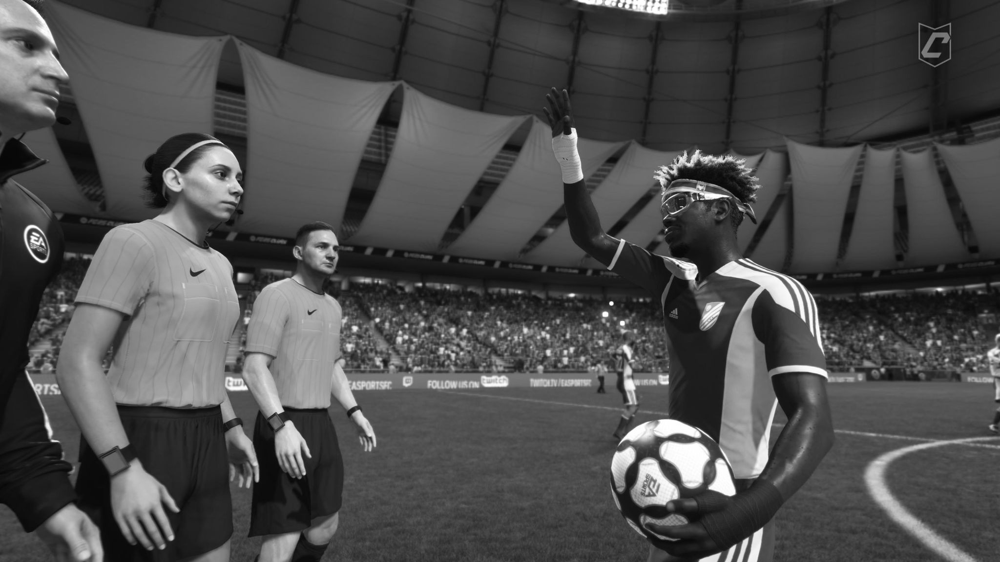

Tw Xerez
Se intentó, se luchó, pero no pudo ser.

Buenas Xerecistas,
Lo primero de todo, disculpas por haber caído en esta fase, en la que desde un principio nunca nos llegamos a plantear jugar, ya que nuestras cotas nos hacían creer en poder haber entrado en el top 8 desde el inicio. Pero por cosas del destino no pudo ser. Tras conocer que tendríamos que disputar esta fase no nos vinimos abajo, ni mucho menos; de hecho, todo lo contrario: había muchas ganas de luchar y avanzar en la KL Pro League, aunque quizás el destino no quería que este fuera el momento.
Agradecimientos
Nos gustaría dar las gracias a todo el mundo:
- A nuestro capitán Crespo, (@Camavinismo) por haber liderado este bonito proyecto y haber sido capaz de encontrar a tantos "locos" dispuestos a jugar un torneo defendiendo al Xerez.
- A Chus, (@chusufusu) por su gran participación dentro y fuera del campo, con una gestión de redes digna de un equipo profesional.
- A Morata Jr, (@hugitobg18) por darnos tantas alegrías con sus goles y asistencias.
- A Pascual, (@Pascualcan1980) que llegó horas antes de nuestro debut y nos ha salvado de muchas, siendo el jugador con más partidos disputados en Tw Xerez.
- Al Puyi de Jerez, (@jaimecorrea091) por su contundencia defensiva.
- A Carlitos, (@carlitoss_diiaz) por el valor de defender la zaga azulina.
- A Jalh, (@jalh_5) por llegar en momentos complicados y aportar tanto.
- A El Ladri Jr, (@adrigutierrez10) por ser tan mágico en su posición.
- A Alex, (@AlexGuillenXCD) por haber hecho esta web desde la que nos leéis.
- A Herrera, (@aalvaroherreraa) por evitar que tantos balones pasasen al área.
- A Presi, (@jajimenezjerez) por haber tenido el valor de jugar dieciseisavos sin haber disputado antes un partido oficial con Tw Xerez.
- A Adri, (@adriangc_14) por su manera de repartir el juego.
- A Bruno, (@brunogarcia_55) por esa contundencia por las bandas.
- A Adrián, (@AdriiMC04) por ser tan polivalente y aceptar su rol.
- A Hugo, (@hugu1t02) por todas esas jugadas ofensivas generadas por su banda.
- A Gabi, (@gabiigarciiaaa_) por todas esas contras que acababan en centros o corners.
- A Pablo, (@pablooercillaa) o mejor dicho Mente Fría, por defender al Xerez con calidad y estilo.
- A vosotros, Xerecistas, a todo aquel que en algún momento ha interactuado con Tw Xerez ya sea en un directo o en X. Ustedes también sois parte de esto.
También queremos agradecer a la propia KL Pro League (@KLProLeague) por dar la posibilidad de que unos majaras de Jerez hayan dado espectáculo tanto en el campo como en las redes.
Queremos dejar claro que esto no es un adiós, es un hasta pronto. Tw Xerez volverá, y no volverá igual: volverá más fuerte y más profesional.
Gracias por todo Xerecistas, hasta pronto.